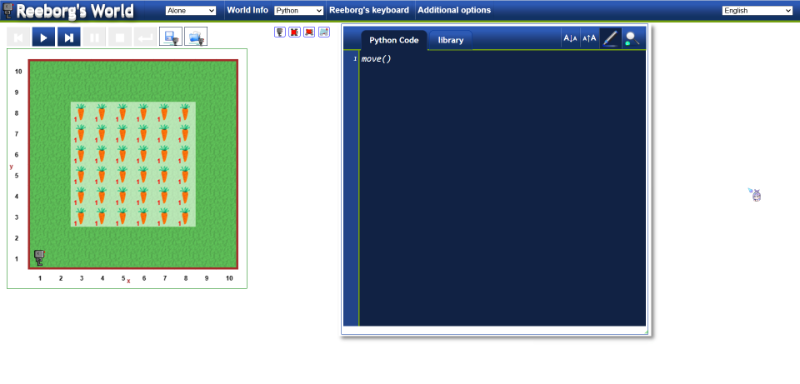
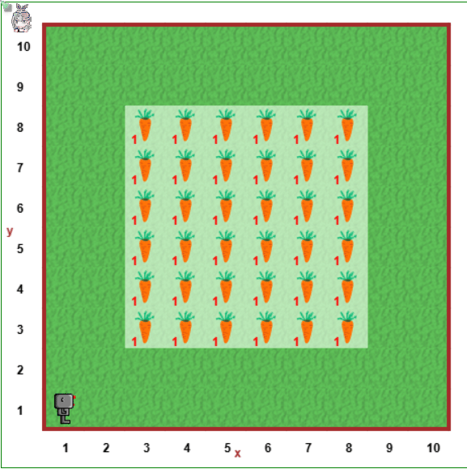

Homework <<
Previous Next >> HW2
HW1
作業一 (20%): 採用 nginx 建立全球資訊網伺服器
在 Windows 操作系統中建立一台 WWW 伺服器
在 Ubuntu 操作系統建立一台 WWW 伺服器
在 虛擬主機上建立一台 WWW 伺服器 (Windows and Ubuntu)
Virtualbox
Vmware 最近宣布適用於 Windows 及 Linux 的 Vmware Workstation Pro (17.6), 與適用於 MacOS 的 Vmware Fusion Pro 全面免費.
下載 Vmware Workstation Pro (For Windows and Linux) - 註冊帳號後下載 VMware-workstation-full-17.6.2.exe
下載 Vmware Fusion Pro (For Mac) - 註冊帳號後下載
操作步驟 (Windows):
- 下載 http://229.cycu.org/win10.vdi, 在電腦中啟動 Virtualbox 後新增虛擬主機.
- 採用 win10.vdi 建立虛擬主機後, 將網路設為橋接後啟動.
- 登入後進入控制台利用個人的 IPv6 網址設定網路連線後, 在虛擬主機中下載安裝 nginx 後測試是否可以正常從實體主機中連線.
- http://229.cycu.org/certbot.7z 設定 https
- git clone https://github.com/mdecycu/reeborg.git 放入 nginx 系統中的 html 目錄
- 利用 http://localhost/reeborg/?lang=en&mode=python&menu=/reeborg/worlds/menus/select_collection_en.json&name=Alone&url=/reeborg/worlds/tutorial_en/harvest1.json&editor=https://mdewcm2025.github.io/hw-scrum-1/python/harvest1.py 進行測試.
- 就機械設計的專業而言, 之後可以用來開發類似: https://github.com/youandvern/efficalc
成功使用nginx建立建立全球資訊網伺服器，並可以執行拔蘿蔔程式
外加一張使用w10.mde.nfu.edu.tw進入nginx的圖片

|
def 拔蘿蔔():
if object_here():
take()
def 拔一排():
for i in range(8): # 每排 8 格
拔蘿蔔()
if front_is_clear() and i < 7:
move()
def 轉向右():
turn_left()
turn_left()
turn_left()
def 之字型拔蘿蔔():
for row in range(6): # 共 6 排
拔一排()
if row < 5: # 最後一排不用轉
if row % 2 == 0:
turn_left()
move()
turn_left()
else:
轉向右()
move()
轉向右()
# === 起始動作 ===
# 目前位置：(2,6)，面朝東
move() # 到 (3,6)
turn_left() # 面朝北
move()
move() # 到 (3,8)
轉向右() # 面朝東
# 開始拔蘿蔔（包括 x=8 那一列）
之字型拔蘿蔔()
|

123
Homework <<
Previous Next >> HW2